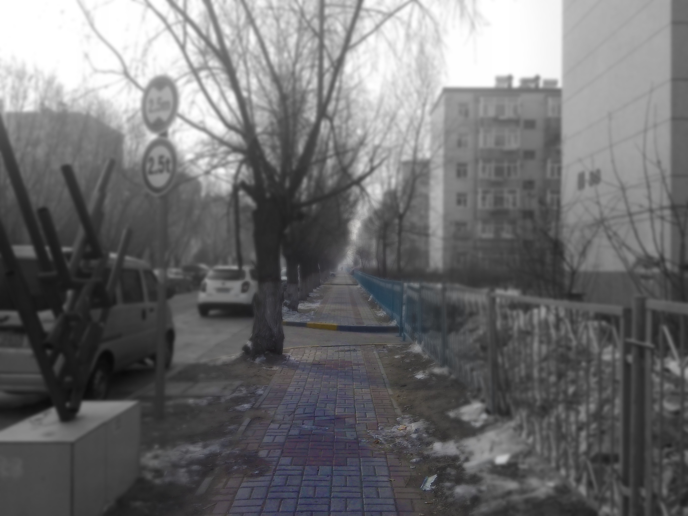
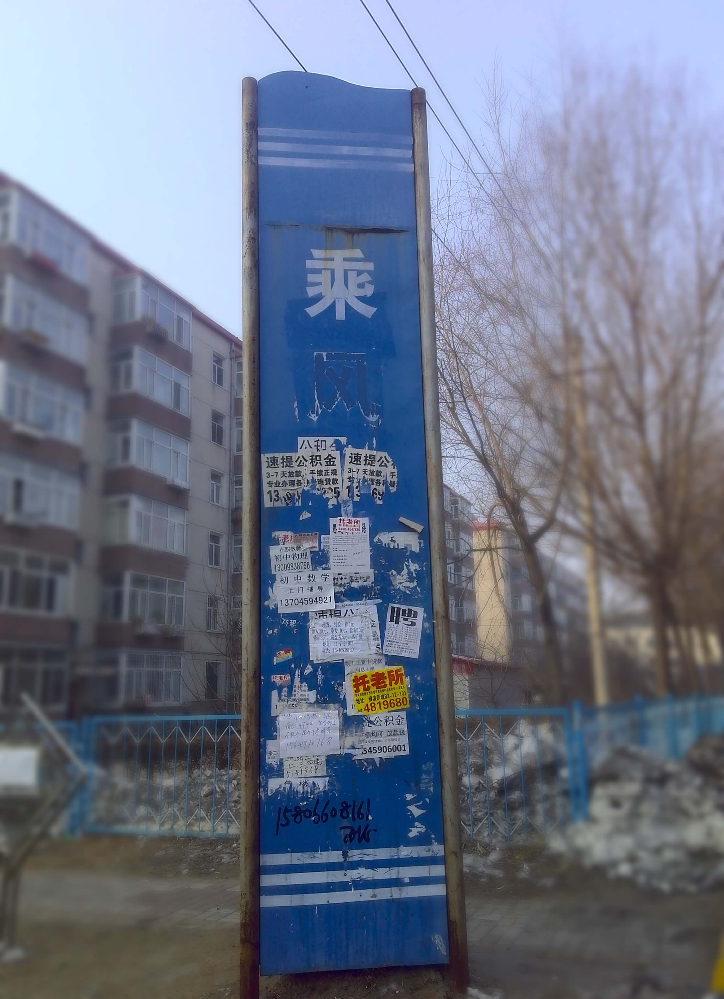

前言
我想，这也许不是一个合适的时间，也许永远都不是合适的时间，去对我们的一切做总结。我们没有办法看到所有的一切，又该怎么总结呢。不过是两个傻乎乎的当局者罢了。可是我又没有选择。一切离我那么近，近到无论下一个瞬间我们会进入哪一个平行宇宙它都不可能离我更近。好吧这也许是刚刚看完大量刘慈欣小说的后遗症，但我知道它一直存在于我心中，只是需要我因为什么，转过头，面对它，然后不敢面对它。无论如何，我终于敲下了这一段话。希望我不要开始得太晚了。
首先告诉任何一个不是她的人：如果你看到了这些文字，那么，写下它们的时候，我没有考虑你的感受。如果你希望祝福我们，请将将祝福化为对这个世界的一点爱；如果你憎恨我们，请立刻关掉这个网页。（如果你想提出技术性的建议，请给通过邮箱联系我。）
情书
情书对于我们来说不限于写在纸上递过去的那些，甚至是拍下来发出去的部分，我更倾向于称之为“动态”，有些时候它都跑题了。而是每一句话，每一件事，每一份爱恋，每一次想念。我们走了无数次的人行道，我们在那里，迎接落叶和白雪，抵抗暴雨和恶犬；我们写了无数话的聊天记录，我们在那里，探讨人生和未来，分享心情和表情包。这都是些写烂了的梗了，这又不是满分作文系列为什么要凑得这么规整让人看不下去呢。
小黑本
当年我们还是同桌的时候，就在我的口头禅还是各种名不副实的“我当年……”的时候，你突然拿出了这个诡异的存在。是的我一直到今天还觉得它太诡异了，在我看来一个记事本无论大小，最高境界都应该是白色的，干净的，让人看着就像写的，然而这东西却完全走了另一个极端。
用铅笔写在黑纸上，只有对着光，在特定的角度下甚至才知道上面有字，我想这对应于某颗心灵的性格是再准确不过的了。所以对于它本身，我完全无法作出评价，只能把这当成是某个我完全无法理解的审美的产物，然后好好珍惜上面的每一个字。比起我浩如烟海的流水账，你的墨宝价值连城。
当年的我没有权利欣赏全部的精华，只能在你的注视下看你让看的部分，我不知道那种注视是为了防止我多看还是观察我的面部表情。依稀记得非常霸气的结束语。我早该预料到这意味着什么。此处插入一张暴漫捂脸表情包。
而多年后，当你再一次递给我一个小黑本时，我便从容地多了。消失多年的它对于我来说如同上古神器一般的存在，让我无比的敬畏。在一个明媚的下午，我倚靠在洒满阳光的沙发上，静静地品尝一个熟悉而新奇的灵魂。
礼物
我总是不擅长挑礼物。如果你能在正确的时间通过正确的途径看到这些东西，那么也许这将成为我所送出的礼物中登峰造极的成功了。年轻时的我总喜欢送你各种破烂，某个初三的大课间，从地上捡到一段线圈本的铁丝，于是弯成一个七扭八拐的心形就直接拿给你了。当多年以后的我看到被你妥善保存的它时，真的有一种恍若隔世的不好意思。
如果我没有记错的话你送给我的第一份礼物应该是一块石头。数学课上你拿出一块鹅卵石让我看，我把玩了一会以后还给你，然后听到你的惊呼，好烫。那节课接下来的时间就是我把石头捂热，然后你把它捂凉。这是距离我鼓起勇气牵你的手还有不到半个月。如今有些时候你的手已经是热的了，我倍感欣慰。后来它被你放在了正在跑步的我的外套帽子里，然后永远的留在了我们的母校。
我和你在一起的第一个生日你送了我一个铁盒子，于是后来你过生日我就去找了个一模一样的铁盒子送给你；你送我的铁盒子里有一个提拉米苏，于是我送你的铁盒子就附带了一盒提拉米苏……我到底为什么这么笨呢。那个提拉米苏我舍不得吃，一直放到坏掉，给正打算一起吃掉它的我们留下了心理阴影。

我送给你的礼物当中，我最满意的是太阳罐。在南开的某天晚上翻到了果壳上的一片DIY，看到它的一瞬间我就对自己说：“天哪就是这个了，我一定要做出来送给你。”那是我第一次对于某个想法一见钟情，从此以后我越发的随性，直至我偶然想送你你一个网站然后就做了一个。在将来的某一个暴雨的夏日，当夜幕降临却风雨不止，电闪雷鸣一个接着一个时，无论我是在几公里之外还是几千公里之外，我都希望我能在打电话安慰你之外再做一点更有用的事。“有太阳罐陪着你就不会那么怕了吧。”这就是我不断做下去的动力。
你送给我的礼物之首莫过于戒指。我无法形容当我看到它时我的窒息感，这是我在生命中很少有的事。我喜欢它，喜欢它本身，也喜欢它无时无刻提醒着我你的存在这个属性。当我发现戴着它去温泉浴室洗澡它会变黄，戴着它做引体向上它会磨损时，我意识到它也像你一样，需要走心的保护。它越来越像你了。当我抱怨手指变粗了戴不进去了，你又买了一枚，又给我了一次惊喜；当我抱怨你时，你也在默默地变得更加适合我。
在我还能戴进去的时候，我会一直戴着它，秀恩爱到天荒地老。
128√e960
在我和编程结下不解之缘之前，我先接触到的是HTML。用它做一些简陋网页或是加了特接的简陋网页是我的一项无聊爱好。
那节课上你告诉我了128√e960的秘密。
于是，回到家，为了向你装逼，我便做了一个没有特技的简陋网页。我甚至煞费苦心的把一切藏起来，让你无法在源代码当中找到这几个字符，而忽略了除了我没有哪个傻逼会去在打开网页之前看源代码。虽然最后没有发送成功但我把截图发给了你。多年以后当我意识到我当时做了什么时我无比愧疚，我觉得当时的我的目的辜负了你的心。
好在你我都是幸运的。
“三条”
我们还没在一起时你曾经给我看过一张纸，写着你对你未来老公的若干要求。当年的我竟然看不懂这样的暗示，真是傻得透顶。我说太多了，于是你改改改，变成这三条。后来，便顺其自然地成为我们之间共同准守的诺言。
可是除了第二个，我好像都犯过不止一次。
曾经我以为，规则制定的越详细，我们就越牢固，我还记得我在初中最后的日子里和你说：我们现在把所有的情况都考虑了，以后就不会有问题了。我无法说那时的我对与否，甚至不知道幼稚与否，但我知道了的是，自己太懒，做不到。
用来记录规则的本子，模仿了Sheldon的“协议”的风格，如今已成了纪念品。
如今的我，只坚持一个原则：你是第一位的。不知道未来我会怎样看待如今的我呢。
重新开始
我是一个喜欢重新开始的人。我喜欢干干净净的东西，
也喜欢把凌乱不堪变得干干净净。我的生活充满了重新开始，我放弃写了没几页的本子，放弃一个游戏存档，放弃一个还有救的软件项目，放弃iPhone阵营。我想成为糟蹋万物的神。
只有你，我不愿意重新开始。
如果是任何别的东西我也许早就忍不了了：我们的过往有太多的不完美，我甚至不确定开心的日子和吵架的日子哪个更多一点；我也不知道之后的一天、五天、一年，我们是会变好还是变坏，又是因为什么；甚至，你对我说，我无论如何也无法弥补我犯过的错误，你对我的记恨，不会因为任何原因而消失。
可是这不一样，这是我的生活啊。
首先我没有重新开始的机会。当我坐在一年前我们吃麻辣烫的位置上时，我说，我们尽量装作是一年前的样子，也许上帝糊涂了，就会让我们回到那个时候。我真的是认真的。我没有办法。我希望我们之间越完美越好，我希望你没有体会过刻骨铭心的悲伤，可我没有办法。哪怕我从现在开始真的做到最好，也只能是以一条渐近线，无限接近完美而不能，何况我还做不到最好。那我也只能改变未来而不是过去。
其次，也许这不一样。也许过去的错误不仅仅是污点，也许这不同于其他东西中的缺憾。我不但能获得教训和经验，而且，当我们看着夕阳落下地平线时，也许，这也是相视一笑的内涵之一。
情书
我记忆最深刻的情书，那种狭义的情书，是你写的分手告白。
那是你第一次说出分手，在三天之后我们和好时你给我的。
它是我的丰碑。
亲爱的 你不知道我考虑了多久 也不知道我是用什么样的心情说出分手的
其实心里很崩溃 很怕你会同意 但我实在没有其它办法解决我们之间的矛盾
我之后又说我从你背着我去考试开始就打算离开你 不是打算 只是在给自己留后路 一旦有什么意外 让我们之前说好的天长地久 海誓山盟统统作废 我不知道要怎么办 我缺乏安全感 可你根本没给我足够的安全感
我说我以为我一直爱你
其实我确实是一直爱你
不想承认只是因为怕自己连最后一点尊严都没给自己留
女生都怕没面子
但是我没有别人那种勇气 不像她们那样总可以有希望 不像她们那样能承受被甩带来的难过 所以我会先说出那么伤人的话 对不起
你会不会很失望
会不会觉得我没有你想象中那么爱你
我爱你
可是你不爱我了
或者说 没有以前那么爱我了
我对于你能不能再变回原来那么爱我没有把握
也对你会不会坚持 我会不会原谅没有把握
不知道我们还会不会继续在一起
如果你放弃了 或者我拒绝了 这张纸也会交到你手里
因为我承认我们的爱情
但是有一件事我只会承认一次
我从来没有停止过爱你
或许我会诅咒那个代替我的人 但是我仍然希望会有那么一个人可以给你起一个只属于她的名字 可以跟你有说不完的话 在你手臂上画心形 走路的时候牵着你过马路 你闯祸了会帮你收拾烂摊子 总是嫌弃你教训你说不喜欢你但还是想跟你白头偕老不离不弃
但你也要记得不要总是让她担心 让她生气 记得在她害怕的时候握住她的手 她走累了背背她 她难过了抱紧她告诉她不管发生了什么都有你在 在适当时候吻吻她告诉她你有多爱她 不要骗她不要让她吃醋 不要让她一个人承受那么大的压力 不要让她受伤生病的时候一个人孤零零地在街上走
那时的我不会再接受你 但是会在原地看着你 待在一个你一回过头就能看到的地方
不过也许另外的那种更美好的情况会发生 我们继续在一起
如果我们真的可以再回到以前那样的话
放心
我再也不会放开你 再也不会对你喊出那个难听得要死的“滚” 再也不会赌气说分手
这些都是如果
不管最后是哪一种
我都可以接受
现在
我要说一次 也许是最后再说一次
小丸 我爱你
2014.4.9 18:37
我在这
也许就像每一次在线上等你或等我时的问答吧。“你在哪呢？”“这呢这呢~”所谓的“这”到底是哪并不是最重要的事。可是，谁又能无限制的一直这样安慰自己呢。也许没有距离会省事，也许没有距离会有更多烦恼，但可以确定的是，那是另一种生活，而处于这一种生活的我们，注定要面对属于我们的烦恼。当我可以想的时候，我会想：“怎么办呢？”什么怎么办？想出来的结果呢？我自己也不知道，我只知道，会有那么几个地方，留下了一堆堆毛线一样缠在一起的忧愁。
风雨操场
据说这样叫是因为只要一开运动会就下雨，不过我在路牌上看到这居然是官方的名字，因而表示怀疑，无论怎样南开应该也会找到一个堂而皇之的理由的。
这是最后一个要做广播体操的年头，当我等待集合时，我养成了往东北方眺望的习惯。天津能源。我所能看到的只是这一栋大楼，有时候可能还看不到。那又怎么样呢。早在初中的时候我看你的视线就经常会被来来往往的同学挡住，我就已经意识到，重要的不在于我看到的是什么，而在于我想看到什么。所以，哪怕有雾霾，哪怕有高楼，哪怕根据几何常识你应该在地平线以下，尽管角度可能不准，我都能看到你。
也许说起风雨操场和你，我的南开同学们先想起的会是三六杯决赛点球。好吧……这本不应该是一件令人印象深刻的事，只能说明那时的我在秀恩爱方面还有提升空间罢了。
小蓝牌子
事实上这牌子并不小，也许也不大？我记不清楚了，因为每次我都没有心思去观察它。哪怕是现在，提到这个东西，我还是会条件反射地心跳加速。
从一开始，见你就是和心跳加速联系在一起的。为什么呢？怕被人发现？好像这些年也没少被人看到啊；要做的事情？我心跳加速的时候又怎么知道要做什么，甚至有的时候明明知道就是和你散步三百米，还是一样的紧张。我想，你对于我来说意味着一个礼物盒子，每次见到你都像是打开礼物盒子，就算是知道不会有什么贵重的礼物，打开它的时候还是会很激动。更何况我又不知道里面会是什么。
哪怕是现在，到了一个我只要说：“妈妈我要’出去’。”就可以名正言顺、心知肚明的去见你的时候，我都会在知道能够见到你的时候，以最快的速度确定时间地点等各种细节，然后什么都不想，专心致志的感受那份心跳。
301、302
在南开的日子里，最大的快乐和最大的难过都发生在这里。由于很多时候我都是在十点半以后，等到宿管大妈巡视完再偷偷摸过去，所以它们还多了个黑暗属性。
从这一年起，电话变得如此的重要。而我却还没有准备好全心全意，花了大量的时间算计还能免费打多长时间电话，发多少条短信，想想也是可笑。这两个空宿舍本来是做晾衣间的，打电话时仿佛能闻到你的体香。加上洗完脚的冰凉，哄不好你的抓狂，基本就成为了对于南开的记忆。
那时我们好像说着什么回到过去，后来我们好像还说着什么那时的你对我有些过分。笑话。如果现在的你对我还像在南开一样的要求，我绝不会再去坚持那些没用的东西。
13楼天台
这是我对于交大感触最深的地方。在上个学期的最后一个月，我经常在那和你联系，包括跨年夜。向北望去是一个大型立交桥，相隔半个校区的距离，但灯光和背景噪声都很清楚。我从来没见过它没有车，哪怕是只有很少的车，哪怕是凌晨两点。
曾经看了很多描述大城市孤独症的文章，也许在这个地方也是体现得淋漓尽致了：孤独地看了来来往往的车水马龙，仿佛漂浮在宇宙当中。当我在回家的火车上看到“漆黑一片”的市区时，我第一次感受到黑暗带给我的踏实和心安。
可是每每我在这的时候，都有你的陪伴。这样我在回忆那时的故事时，不会像回忆那个场景时那么孤独。虽然这只是一种简单的转移注意力，没有改变什么实质。但已经很好了啊。
就是这样的事，和其他千千万万的事，构成了当你说你觉得我根本不需要你时，我想说出口但总是说不好的部分。
乘风湖
小时候住在离这个泡子很近的地方，到了晚上不开窗户都能闻到那股恶臭。从来没想过在之后的十多年中，它会被整治，会焕然一新，甚至会成为我想念的一部分。夏天我和你在这里淋过暴雨，冬天我陪你在这里踩过积雪，年复一年我都和你在这说说说。
当我想家的时候，我总是想到雪；当我想学的时候，我总是想到湖边小路旁的雪。没有被踩过，但是被风吹得还是起起伏伏；重要的是天气总是很好。阳光照在雪上，亮晶晶的，就像你的眼睛。就像罗辑掉进湖里的瞬间大彻大悟，我也相信寒冷能使思维清晰。所以，在这里的你的笑容，便也就记得格外清晰。
我在这
列举了这么多，也没有顺序，我想我可能是故意的吧。其实我希望这些文字尽量不要带有情绪，但也不要冰冷，就是准确无误地记录就好了，实在不行可以肉麻一点。所以总是会写着写着突然词穷，毕竟现在的我如此消沉，不太适合回顾这些开心的往事。
当我站在遥远的天台，听着飞机划过，在心中比划着两千公里究竟有多远的时候，心中还是充满了无力感。如果核弹袭来，世界瘫痪，我可能要花掉一辈子才能走回去和你团聚。你时不时对我的抱怨也让我越来越怀疑自己，不再仅仅是说“我会不会还没有实现自己承诺的未来就已经失去你”，而是“我到底是不是这块料能不能实现自己的诺言”，甚至是“你到底在不在意我想给你的未来是什么我这样子做到底有没有意义”。我自然知道这样下去不会有好事，但我同样不知道这些问题的答案。
如果是一年前，甚至是我们一千天纪念日的时候，我都可以毫无压力地，也仿佛毫无责任地对你说那些振奋人心的话，而如果回到初中时代，我甚至会觉得自己就是信心的化身，就是乐观之神，你就是喜欢我那样。
一方面我变得更加现实了，一方面，我变窝囊了。
我能够感觉到自己在不进而退，原本可能到中老年才会有的感觉，我选择的道路让它来得早很多。我惶惶不可终日。
也许我的过去还残留在我的身上，让我总是会产生人类三大错觉之一。也许我曾一遍遍地告诉过自己不要再痴心妄想，也许我从来就没有打击过自己。“你多爱你自己啊。”你不止一次地这样嘲讽我。
我不知道。也许当我完成这个礼物我就能看开一切了，也许完成这个礼物我就能放下一切不重要的了，也许完成这个礼物一切就会变好了，也许完不成这个礼物我就死了。
一直的一直我都能找到自己存在的意义，除了现在。有时候我觉得自己存在是为了不断地惹你生气自己也懊恼，那我还不如不存在。只有当你开心的时候，我才觉得我还是个有用的窝囊废。
我大概早就不该像小时候一样，漫无边际地去幻想了，我可以接着去想你看到这个网站会高兴的说爱我还是愤怒地让我立刻把它撤掉并且怎么哄你都不理我，但是不要再想什么写完作业、写完软件项目、写完笔记、整个人积极向上、形成良性循环、不再束缚于他人的行为、完成自己的理想、拯救这个世界什么什么的了。不仅仅是没有用了。现在它们已经成了祸害，成了我的海洛因，让我天天在梦里高潮着，醒来以后四肢百骸都酥软无力，继续甚至更加窝囊废。
也许我会把一部分记在这些文字里，也许不会，但是我真的要和它们告别了。
你看，我已经窝囊到不敢做梦了。
当我在去年冬天，回家的火车上，厕所的镜子里，第一次看到那个样子的自己，看到眼中流露出的绝望，一副死了娘卖了娃的表情时，我在惊讶之余，便意识到这已经不是我自己了。内心当中的我还在高高的盘山路上，现实当中的我可能已经侧滑坠落云端了。我以为自己永远都不会是那个样子，所以我固执地没有承认。
然而拒绝了短痛的我，开始了漫长的长痛。我眼睁睁地看着自己的信心一点点的消失殆尽，变成了今天这样一个愤世嫉俗又无药可救的样子。这样的我，你还想要么。
我就在这。
补：写这篇的时候状态很不好，跑题了又没有一点送礼物的样子，反而满满的丧气。考虑到这段话和上面的仅仅相隔一分钟，所以也不会有什么起色，顶多是个概括吧：我越来越笨了，但我还在这。你是我唯一的动力，我会一直尽力做下去，我会一直在这，我爱你。
也许如今的我已经被深深地打上了某些烙印。
也许我也会深深地低下头，轻轻摇着。
也许我会背过欢闹的人群，独自走向被孤立的方向。
但是，只要一首电音，我就能站起来。
礼物
开始写的时候没有计划，没有构思，甚至没怎么想，仅仅是因为时间不多了。我想我的实际操作某种程度上毁掉了这个点子，如果你对这个礼物的构想还有那么一点点的赞许的话。
其实我还希望通过这个来告诉你，我的知识不仅仅能够让你觉得我在装逼和拉远我们之间的距离。我学习编程绝对不是为了养活自己，至少到目前我都只研究了自己感兴趣的部分。如果你还喜欢这个作品的话，希望你可以爱屋及乌，喜欢上我为之奋斗的领域。当然，一场大幕也会渐渐拉开，它具体是什么，还是等到我做到哪再说到哪吧。
这不应该是个静态的东西，以后这可以作为一个长效的日记本，作为比较长的一段时间的一个较大篇幅的总结。我希望保持它的简单，一方面要发挥一个博物馆的作用，另一方面又不要像个博物馆一样只是让人想参观，还要像苹果牌记事本一样看到就想往上写东西。
也许你注意到了，我没有再列举时间轴，没有一个“过去、现在、未来”的版块。写的过程中我几次都想把它加上，但是这并不是一个纪念日，我不想亵渎那种神圣；再者说，由上面那一段话，我想你也该能想到我可能会把“未来”那一段写的一塌糊涂。
但是这一切都不代表我们没有未来了。这怎么可能呢。我反倒觉得这样的态度虽然也不好，但是比自认为看得清未来，能驾驭时间还是要好的。我的悲观也意味着一种敬畏，我不会再因为过去的一点点作为而沾沾自喜，洋洋得意；而我说不出未来是什么样的，也意味着我越来越像你，越来越接近一个随性的人。虽然让我这样一个没有自控力的人变得随性也许会酿成大祸，但我本身就已经是一个大祸了。
时间就像我头顶的苹果牌三角锥，永远不可能知道它会在什么时候停下来，也不可能知道它会不会永远转下去。
过去的时间里我不停地在犯错，犯错，以至于和我犯过的错相比，我的进步微乎其微。可悲的是，我依然不敢保证我在接下来的日子里就不会再犯错，哪怕是以前犯过的错。你一直让我有一点捉摸不透，然而我现在不太确定我能不能，或者该不该，把你琢磨透。我们就像返璞归真了一样，明明在那么多观念层次的事上达成了一致，至少是交换了意见，却还总是为了吃饭睡觉而闹不开心。哪怕到了现在，当你说你不开心的时候，我还是没有把握能找到让你开心的方法，有时甚至不能很好地表明我是在努力试着让你开心的。
我们都感慨过，三年多了，都三年多了。时间过得飞快，也许我们把吃饭睡觉的事情彻底解决了的时候我们的孩子都有了，也许我们还没有解决婆媳关系的问题老人们就去世了。一辈子很短啊。唉怎么说着说着又变得这么伤感了。
亲爱的，谢谢你一直以来的相伴，让我变成了更好的自己。谢谢你对我的潜移默化，让我有了最起码的谦虚，自省，和对他人的尊重。我一直都觉得如果没有你，我可能早就被人群殴致死了。
是你让我觉得我的生活还可以抢救一下。是你让我无论在什么时候，都不会丧失自己的目标。是你让我在心理发生转变的时候拥有一个倾诉的对象。是你让我从不担心自己的人际关系，有你就够了，再说你也会给我必要的提醒的。
你让我看到这个世间残存的生活的意义。我无以为报，只能用我接下来的生命陪你，如果你不想，那我就只能努力提高自己，让你想让我陪你。
我享受着你给我的一切，和我爸吵架时，我的语气带着优越。我愧于拥有这一切，我时常会觉得自己早就不该属于自己的位置，都是我偷来的。
（接下来的文字写于又看了几篇刘慈欣的小说之后）可是我最怕最怕的，还是失去你啊。
其实也可以说我一点都不害怕这个，因为在那一瞬间，我就不再能够体会任何的感觉了，哪来的怕不怕。我看起来好像不需要你一样，甚至看起来好像被你束缚，当然这都只是在你看来。可是，小傻帽，这真的只是看起来啊。
如果我迷失在太空中，迷失在地心里，我拥有任何别的都会死掉，只有你，拥有你就够支撑我活一辈子了。
世间那么可怕，你就是我的胆量，你知道嘛。
真是可笑，我以为我需要寻找一些灵感把心中的想法写出来，结果却打开了错误的小说……心里的恐惧越积越多，可我还是不知道怎么把它说出来。
而你，此时也不知道在干什么，已经睡了？失眠？你已经好久都没有回我的短信了，我就像坠入地心了一样。
我想我不能再跑题下去了……可以写给你的东西有很多，这是一个礼物，就该有一点礼物的样子吧。
第一个第二个情人节，我根本不知道我应该送你礼物。
第三个情人节，我打算送你一个太阳罐，然而一直到半年以后我才把它做好交给你。
第四个情人节，我想，我还是有一点长进的吧。希望接下来的每一步，我都能按期完成，交出这份理科宅的礼物。
亲爱的，情人节快乐！
后记
这个网页使用了Bootstrap框架。在此向Twitter表示感谢。
此网页架构以MIT许可开源，内容遵守CC BY-NC-SA 3.0许可。欢迎访问此网页的Github仓库。
如果有关于这个网站的可改进之处，请联系我的邮箱：hexapetalous@126.com